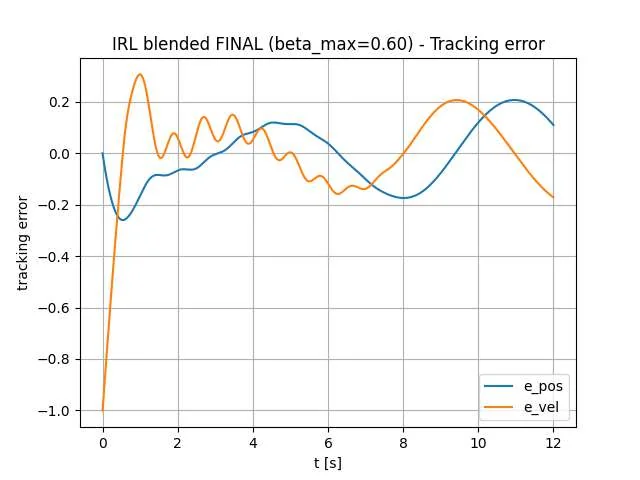

Reinforcement learning for control
From reward signals to constrained control actions.
 SIMULATION / CONTROL TRAJECTORIES
SIMULATION / CONTROL TRAJECTORIESThe challenge
Can a learned policy track a reference accurately while respecting actuator limits and remaining useful under changing system conditions?
The approach
Built a simulated DC motor with nine discrete voltage actions and a tabular SARSA controller, then examined separate-load and robust training. A second project investigated integral actor–critic reinforcement learning alongside PD and blended PD–IRL controllers.
- Discrete-state SARSA(0) with ε-greedy exploration
- Voltage limits and multiple motor load scenarios
- Actor–critic learning for a simulated spring–mass–damper system
- Comparison with conventional proportional–derivative control
The outcome
Course reports document simulated speed-tracking and controller comparison results. The reported motor policy met specified rise-time and overshoot limits across three simulated loads. These reports are not a fresh re-run of the currently published scripts.
Contrasting tabular SARSA with an actor–critic control approach.
From the project

Simulation results are not evidence of real-world motor deployment or hardware safety.